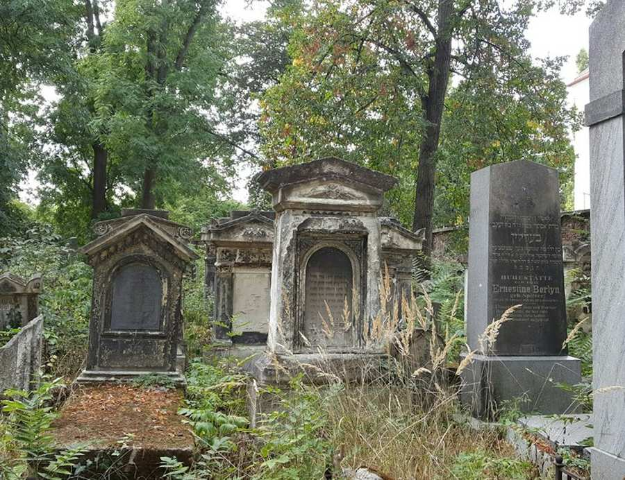

Cemeteries
Cemetery Database
The online database only contains burials until 1945. Please contact us for information on later deaths per email: friedhof-tor-4@ikg-wien.at or phone: +43 1 767 62 52
Cemeteries
()
Sheet of instructions
Entering the Jewish Cemetery may be associated with some risk, due to the age of the cemetery and its structural condition. This information sheet should be signed at some cemeteries which are not open to the general public, before the key to the cemetery is handed over.
Information sheet about Jewish cemeteries as a pdf
Private grave restauration
Due to global demand the Jewish Community of Vienna offers grave restaurations in cooperation with restorers and stonemasons.
The status of the grave will be defined and a renovation concept developed.
In case you are interested in having the grave of your ancestors restaurated, please feel free contacting our membership services:
Regarding the execution of the grave restorations and grave reservations you can use the following contact:
Mag.ª Bettina Kolter
Tel: +43/1/531 04 – 180
b.kolter [at] ikg-wien.at
Jewish cementary remediation and administration
Assistant:
Tel. +43/1/531 04 – 231
s.hoenigl [at] ikg-wien.at